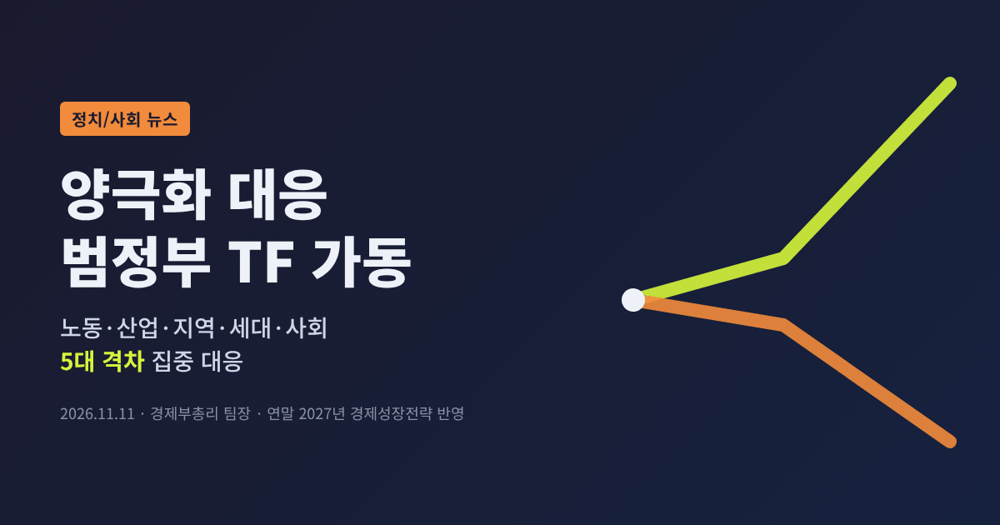
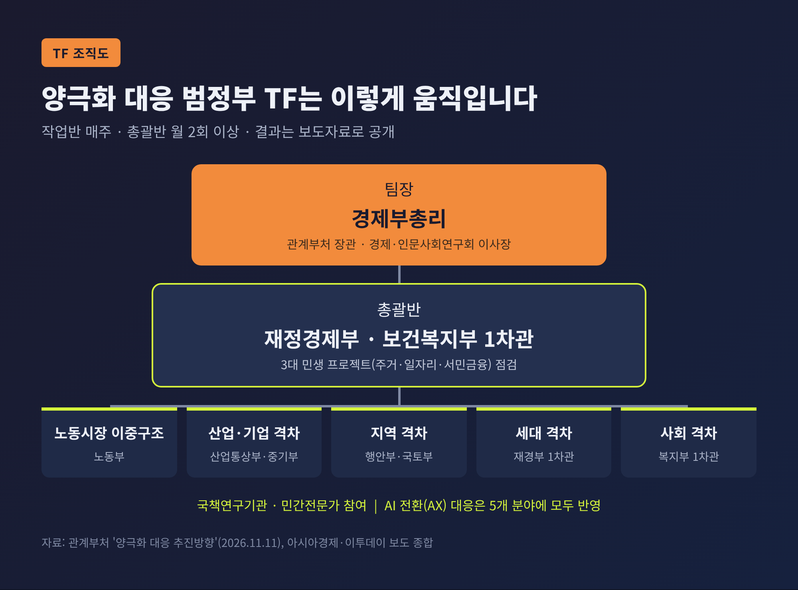
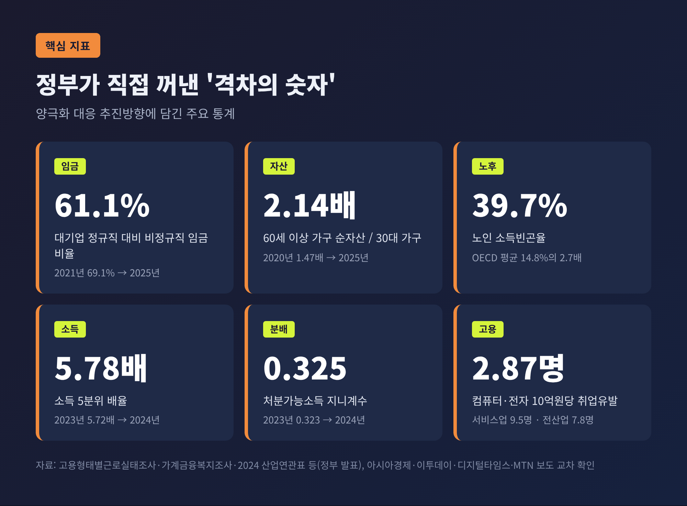
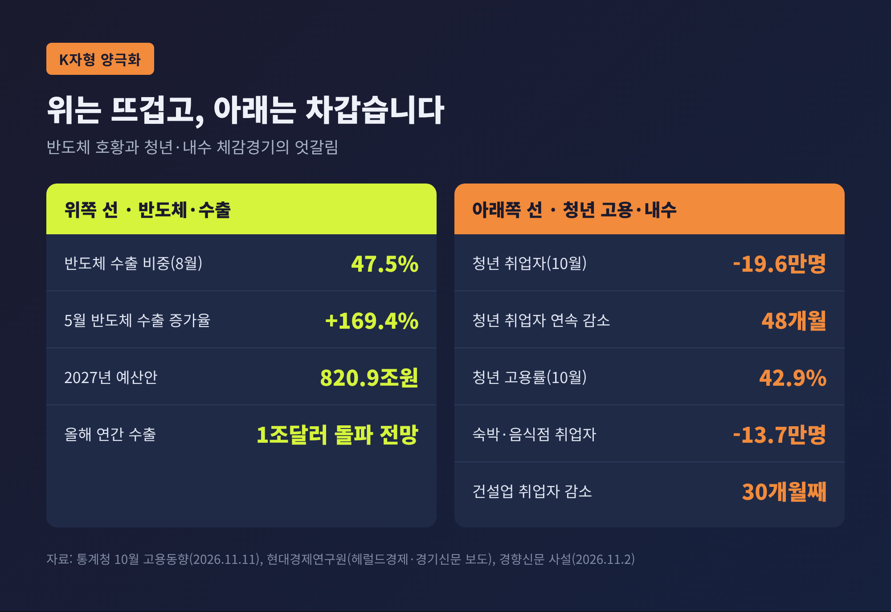
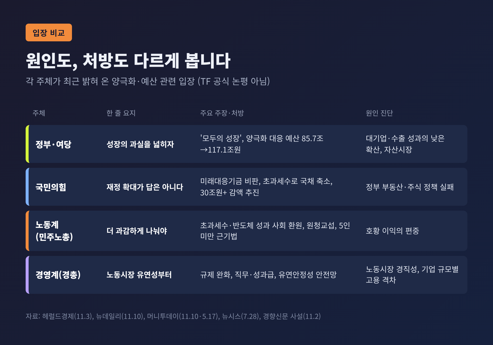
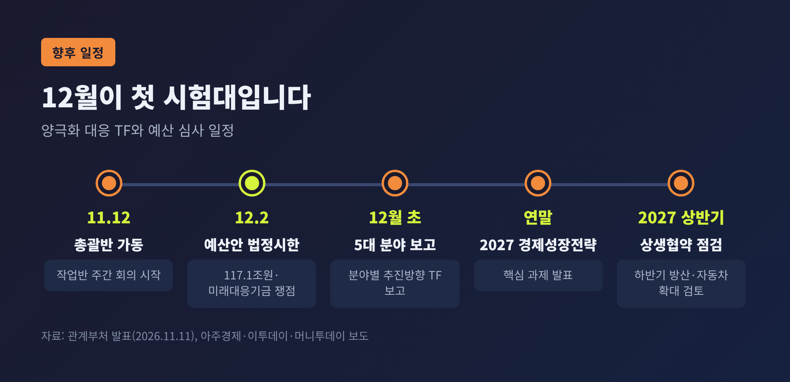

양극화 대응 범정부 TF 가동, 정부가 5대 격차부터 손보는 이유

이번 글에서는 정부가 11일 띄운 '양극화 대응 범정부 TF'를 정리해 보겠습니다. 무엇을 하겠다는 것인지, 왜 하필 지금인지, 그리고 정치권과 노사가 이 문제를 어떻게 바라보는지를 차례로 짚습니다.
세 줄 요약 - 경제부총리가 팀장을 맡는 양극화 대응 TF가 노동·산업·지역·세대·사회 '5대 격차'를 다룹니다. 총괄반은 12일부터 돌아갑니다. - 반도체 수출은 기록적인데 청년 고용과 내수는 식어 있는, 이른바 'K자형 양극화'가 배경입니다. - 연말 '2027년 경제성장전략'에 핵심 과제가 담깁니다. 재정 확대를 둘러싼 여야 공방과 맞물려 실행력이 시험대에 오릅니다.
■ 무슨 일이 있었나 — 부총리가 직접 맡은 TF
11일 정부서울청사에서 열린 경제 장관 회의에서 '모두의 성장으로 대전환을 위한 양극화 대응 추진방향'이 확정됐습니다. 회의를 주재한 사람은 이형일 부총리 겸 재정경제부 장관입니다. 보도에 따라 회의 이름은 '비상경제장관회의' 또는 '경제관계장관회의'로 엇갈려 적혔습니다.
핵심은 범정부 '양극화 대응 TF'입니다. 팀장은 경제부총리이고, 관계부처 장관과 경제·인문사회연구회 이사장이 참여합니다. 그 아래 총괄반은 재정경제부와 보건복지부 1차관이 함께 이끕니다.
실무는 5개 작업반이 맡습니다. 아시아경제 보도에 따르면 반장 배치는 다음과 같습니다.
| 작업반 | 반장(차관) | 주요 과제 |
|---|---|---|
| 노동시장 이중구조 개선 | 노동부 | 고용형태·기업 규모별 보호 격차, 연공급 임금체계, 원·하청 관계 |
| 산업·기업 간 격차 완화 | 산업통상부·중소벤처기업부 | 대기업과 중소기업의 격차 |
| 지역 간 격차 완화 | 행정안전부·국토교통부 | 수도권 집중 완화, 비수도권 경제 활성화 |
| 세대 간 격차 완화 | 재정경제부 1차관 | 청년·고령층 자립 기반 |
| 사회 격차 완화 | 보건복지부 1차관 | 소득재분배, 사회안전망 |

운영 방식도 촘촘하게 잡았습니다. 작업반은 매주, 총괄반은 월 2회 이상 회의를 엽니다. 결과는 보도자료로 공개합니다. 부처끼리 의견이 갈리면 경제현안간담회에서 따로 조율합니다.
재정경제부 안에는 '양극화완화대응반'이 새로 생깁니다. 기존 '민생안정지원단'은 '양극화완화지원단'으로 확대 개편됩니다. 총괄반은 주거·일자리·서민금융 등 '3대 민생 프로젝트'와 금융기본권 정책도 함께 점검합니다.
정책의 두 축은 '이동성 복원'과 '하방압력 해소'입니다. 위로 올라갈 사다리를 다시 놓고, 취약계층이 더 밀려나는 것은 막겠다는 뜻입니다. 과제는 단기(2027년)와 중장기(2030년까지)로 나눕니다. 인공지능 전환(AX)은 별도 분야로 두지 않고 다섯 분야 모두에 녹이기로 했습니다.
■ 왜 중요한가 — 정부가 직접 꺼낸 '격차의 숫자'
이번 발표에서 눈에 띄는 것은 정부 스스로 격차가 벌어졌다는 통계를 앞세웠다는 점입니다. 여러 매체 보도에서 공통으로 확인되는 수치는 이렇습니다.
- 임금: 대기업 정규직 대비 비정규직 임금 비율은 2021년 69.1%까지 올랐다가 2025년 61.1%로 떨어졌습니다. 2016년(62.7%)보다도 낮습니다.
- 자산: 60세 이상 가구의 순자산은 30대 가구의 2.14배입니다. 2020년에는 1.47배였습니다.
- 노후 빈곤: 노인 소득빈곤율은 39.7%로, OECD 평균 14.8%의 2.7배 수준입니다.
- 소득 분배: 소득 5분위 배율은 5.72배(2023년)에서 5.78배(2024년)로, 지니계수는 0.323에서 0.325로 높아졌습니다.

정부의 진단은 분명합니다. 대기업·수출 중심 성장의 성과가 중소기업과 취약계층까지 퍼지지 못했다는 것입니다. 수도권 부동산과 주식 같은 자산시장 성장이 자산 격차를 키웠다는 설명도 덧붙였습니다. 소득분배는 그동안 사회안전망 확충으로 나아지다가 2024년 다시 나빠졌다고 봤습니다.
이형일 부총리는 "양극화의 골을 메우고 불평등의 벽을 낮추는데 힘을 모으겠다"고 말했습니다(디지털타임스). "제도·관행 등 구조적 문제"를 해결하겠다는 표현도 썼습니다(세계일보). 단순히 지원 사업을 늘어놓지 않고 재정·세제·금융·규제 개선을 한 묶음으로 쓰겠다는 것이 이번 접근의 특징입니다.
■ 배경 — 위는 뜨겁고 아래는 차가운 K자형 경제
TF가 나온 배경에는 이른바 'K자형 양극화'가 있습니다. 같은 경제 안에서 한쪽은 치솟고, 다른 쪽은 가라앉는 모양을 가리킵니다.
위쪽 선은 반도체입니다. 현대경제연구원 분석을 전한 보도에 따르면 5월 반도체 수출은 1년 전보다 169.4% 늘었습니다. 8월에는 전체 수출에서 반도체가 차지하는 비중이 47.5%까지 올라갔습니다. 2027년 예산안이 사상 최대인 820.9조원으로 짜인 것도 반도체 호황에 따른 세수 덕분입니다.
아래쪽 선은 사정이 다릅니다. 이날 함께 나온 10월 고용동향이 상징적입니다.
- 전체 취업자는 13만9천 명 늘었습니다.
- 청년(15~29세) 취업자는 19만6천 명 줄어 48개월 연속 감소했습니다.
- 청년 고용률은 42.9%로 30개월째 하락했고, 10월 기준 2020년 이후 가장 낮습니다.
- 숙박·음식점업 취업자는 13만7천 명 줄었습니다. 2021년 2월 이후 최대 감소폭입니다.
- 건설업 취업자는 30개월 연속 줄었습니다.

반도체가 일자리를 많이 만들지 못한다는 점도 정부 자료에 담겼습니다. 최종수요 10억원당 취업유발 인원은 컴퓨터·전자산업이 2.87명입니다. 서비스업 9.5명, 전 산업 평균 7.8명에 크게 못 미칩니다. 수출이 아무리 늘어도 체감이 더딘 이유가 여기에 있다는 해석입니다.
자산 쪽도 비슷합니다. 한국은행은 6월 보고서에서 순자산 지니계수가 2017년 0.584에서 2025년 0.625로 올랐다고 밝혔습니다. 순자산과 소득이 모두 하위 20%인 가구 가운데 20~30대 비중은 5년 새 7.9%에서 15.2%로 두 배 가까이 늘었습니다.
예전엔 수출이 늘면 일자리와 소비가 뒤따른다는 기대가 있었습니다. 지금은 그 연결고리가 약해졌다는 진단이 정부와 민간 연구기관 양쪽에서 나옵니다.
■ 쟁점 — 원인도, 처방도 다르게 보는 사람들
양극화가 심각하다는 데는 대체로 이견이 없습니다. 갈리는 것은 원인과 해법입니다. 다만 TF 자체에 대한 정당·노사단체의 공식 논평은 발표 당일 기준으로 확인되지 않았습니다. 아래는 각 주체가 최근 양극화와 예산을 두고 밝혀 온 입장입니다.
정부·여당 — "성장의 과실을 넓히자" 이재명 대통령은 2일 시정연설에서 "모두의 성장으로의 대전환"을 내세웠습니다. 2027년 예산안에서 'K자형 양극화 대응' 분야는 올해 85.7조원에서 117.1조원으로 늘었고, 증액분의 절반 이상이 지역에 배정됐습니다. 한병도 더불어민주당 원내대표는 이를 "성장 확산 예산"이라고 불렀습니다. 반도체 호황이 영원하지 않으니 다음 성장동력에 대비하자는 논리입니다.
국민의힘 — "재정 확대가 답은 아니다" 정점식 원내대표는 미래대응기금을 "무책임한 극단주의 포퓰리즘 예산"이라고 비판했습니다. 국회예산정책처 분석을 근거로 추가 세수가 2029년 이후 끊길 수 있다고도 했습니다. 양극화의 원인으로는 정부의 부동산·주식 정책을 지목했습니다. 국민의힘은 초과 세수를 국채 발행을 줄이는 데 써야 한다는 입장이며, 예산안에서 30조원 이상 감액을 추진하고 있습니다.
노동계 — "더 과감하게 나눠야" 민주노총 양경수 위원장은 6월 "코스피 8000이 노동자들의 행복지수는 아니다"라고 말했습니다. 7월에는 반도체 성과와 초과세수를 사회에 어떻게 돌려줄지가 정부 성패의 기준이라고 주장했습니다. 원청교섭 현실화와 5인 미만 사업장 근로기준법 적용 같은 제도 개선도 요구해 왔습니다.
경영계 — "노동시장 유연성부터" 한국경영자총협회는 5월 보고서에서 300인 이상 기업 고용은 6.1% 늘었지만, 고용의 약 90%를 차지하는 300인 미만 기업은 2023년 이후 제자리라고 분석했습니다. 처방으로는 경직된 규제 완화, 직무·성과 중심 임금 확대, 유연안정성 기반 안전망을 제시했습니다.

언론 시각도 엇갈립니다. 경향신문은 사설에서 보건·복지·고용 예산 증가율(9.3%)이 총지출 증가율(12.8%)보다 낮다며 양극화 해소 의지가 부족하다고 지적했습니다. 거꾸로 국민의힘은 지출 상당수가 매년 반복되는 소비성이라고 문제 삼습니다. 같은 예산을 두고 "모자라다"와 "과하다"가 동시에 나오는 셈입니다.
기존 기구와의 관계도 지켜볼 대목입니다. 3월 출범한 경제사회노동위원회도 '양극화 해소'를 의제로 다루고 있습니다. 두 기구 간 중복을 문제 삼은 공개 논평은 아직 확인되지 않았습니다. 다만 노동시장 이중구조처럼 사회적 합의가 필요한 과제에서 역할을 어떻게 나눌지는 분명히 할 필요가 있어 보입니다.
과거에도 비슷한 시도는 있었습니다. 노무현 대통령은 2006년 신년연설에서 양극화 해소를 핵심 과제로 내걸었습니다. 당시에도 원인을 저성장으로 보고 시장 친화적 성장을 주문하는 반론이 나왔습니다. '성장이냐 분배냐'라는 오래된 논쟁이 20년 만에 다른 모습으로 돌아온 것입니다.
■ 앞으로 전망 — 12월이 첫 시험대
일정은 빠듯합니다.
- 11월 12일 — 총괄반 가동, 작업반 주간 회의 시작
- 12월 2일 — 2027년 예산안 국회 처리 법정시한 (양극화 대응 117.1조원·미래대응기금이 쟁점)
- 12월 초 — 5대 분야 추진방향을 TF에 보고
- 연말 — 부처 합의 과제를 '2027년 경제성장전략' 핵심 과제로 발표
- 2027년 상반기 — 조선업 원·하청 상생협약 성과 점검, 하반기 방산·자동차 확대 검토

관전 포인트는 세 가지로 추릴 수 있습니다.
첫째, 국회 예산 심사 결과입니다. TF가 쓸 수 있는 재원의 크기가 사실상 여기서 정해집니다. 여야가 미래대응기금을 두고 정면으로 맞서고 있어 감액 폭이 변수입니다.
둘째, 노동시장 이중구조 과제의 구체성입니다. 연공급 임금체계나 원·하청 문제는 노사 이해가 첨예합니다. 정부도 사회적 합의가 필요한 과제는 공론화를 거치겠다고 밝혔습니다. 어느 과제를 '즉시 추진'에, 어느 것을 '공론화'에 넣는지가 정책 의지를 가늠하는 잣대가 될 것입니다.
셋째, 체감 지표의 변화입니다. 청년 고용률과 내수 지표가 언제 반등하느냐가 결국 TF에 대한 평가를 좌우합니다. 회의 결과를 보도자료로 공개하겠다는 약속이 지켜지는지도 함께 볼 만합니다.
물론 한계도 있습니다. TF는 기존 정책을 묶고 조율하는 협의체에 가깝습니다. 새 권한이나 독자 예산이 생기는 것은 아닙니다. 부처 칸막이를 넘을 수 있을지는 아직 알 수 없습니다.
정리하면 이렇습니다. 정부는 숫자로 격차를 인정했고, 조직과 일정도 내놓았습니다. 남은 것은 그 숫자를 실제로 움직이는 일입니다.
— 양극화 대응의 성패는 회의 횟수가 아니라 청년 고용률과 동네 상권에서 드러날 것입니다.
연말 경제성장전략에서 무엇이 '핵심 과제'로 살아남는지, 그때 다시 짚어 보겠습니다.
참고 자료
- 아시아경제, 「정부, 양극화 대응 범정부 TF 가동…노동·산업·지역 등 5대 격차 손본다」, 2026-11-11, https://view.asiae.co.kr/article/2026111107463095236
- 이투데이, 「노동·산업·지역·세대·사회격차 줄인다…'양극화 TF' 가동」, 2026-11-11, https://www.etoday.co.kr/news/view/2646563
- 디지털타임스, 「수출은 호황인데 격차는 확대…정부, 양극화 해소 나선다」, 2026-11-11, https://www.dt.co.kr/article/12094471
- 와이드경제, 「"수출 온기 왜 안 도나"…정부, 5대 격차 정조준 '양극화 대응 TF' 띄운다」, 2026-11-11, https://www.widedaily.com/news/articleView.html?idxno=303368
- 한국세정신문, 「정부, 양극화 해소 위해 5대분야 구조적 문제 해결 집중」, 2026-11-11, https://www.taxtimes.co.kr/news/article.html?no=277684
- 파이낸셜뉴스, 「경제부총리 팀장으로 양극화 대응 TF 가동…범정부 협업체계 구축」, 2026-11-11, https://www.fnnews.com/news/202611101453552573
- 아주경제, 「경제부총리 주재 양극화 TF 가동…연내 성장전략에 핵심과제 반영」, 2026-11-11, https://www.ajunews.com/view/20261111083858968
- 세계일보, 「'양극화 해소 TF' 띄워 핵심 정책과제 발굴」, 2026-11-11, https://www.segye.com/newsView/20261111516016
- MTN, 「정부, '양극화 대응 TF' 가동… "AI가 격차 더 키워 비상"」, 2026-11-11, https://news.mtn.co.kr/article/2026111107312378288
- 파이낸셜뉴스, 「취업자 넉달째 10만명대↑…청년 고용률은 30개월째↓ 6년래 최저」, 2026-11-11, https://www.fnnews.com/news/202611111037248063
- 서울경제, 「K자 양극화 대응 117조…증액 절반 이상 지방에」, 2026-09-01, https://www.sedaily.com/article/20085692
- 경향신문 사설, 「말뿐인 '모두의 성장' 안되려면 양극화 해소 예산 강화해야」, 2026-11-02, https://www.khan.co.kr/article/202611021923001/
- 헤럴드경제, 「與 "성장 확산" 野 "포퓰리즘"…李대통령 시정연설 엇갈린 평가」, 2026-11-03, https://biz.heraldcorp.com/article/10923792
- 뉴데일리, 「국힘 "162조 미래대응기금은 정권 사금고…국채로 만든 회계 트릭"」, 2026-11-10, https://www.newdaily.co.kr/site/data/html/2026/11/10/2026111000112.html
- 머니투데이, 「12월2일 예산안 심사 카운트다운, 국회 문턱 넘으려면」, 2026-11-10, https://www.mt.co.kr/article/2026110423122682128
- 경기신문, 「반도체 호황에도 체감경기 '냉랭'…'K 양극화 고착' 우려」, 2026-09-06, https://www.kgnews.co.kr/news/article.html?no=910486
- 헤럴드경제, 「반도체만 좋은 한국경제…현대硏 "K자형 양극화 심화"」, 2026-06-08, https://biz.heraldcorp.com/article/10766254
- 디지털타임스, 「순자산·소득 최하위 청년 비중 5년 새 두 배」, 2026-06-11, https://www.dt.co.kr/article/12067078
- 머니투데이, 「고용 늘었지만 'K자형 양극화' 심화…"노동시장 유연화 시급"」, 2026-05-17, https://www.mt.co.kr/industry/2026/05/17/2026051710040966677
- 뉴시스, 「박홍근 만난 민주노총…"2027년 예산, 불평등 해소 첫 시험대"」, 2026-07-28, https://www.newsis.com/view/NISX20260728_0003726425
- 헤럴드경제(미주), 「민주노총 "이재명 정부 1년, 양극화 해법 안 보여"」, 2026-06-09, https://www.heraldk.com/article/2026060919513073366
- 더팩트, 「이재명 정부 1기 경사노위 출범…AI·고령화 등 사회적 대화 재가동」, 2026-03-19, https://news.tf.co.kr/read/life/2303951.htm
#양극화대응TF #5대격차 #K자형양극화 #모두의성장 #2027경제성장전략 #청년고용 #노동시장이중구조